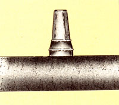
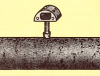
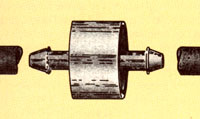
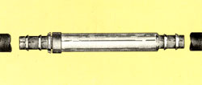
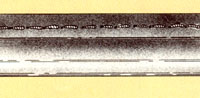
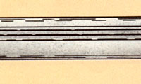
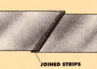
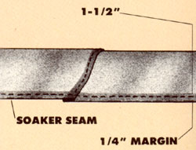

Can a drip system work wonders in your garden? Find out with one of these six beginner's kits! By Bob Kornegay
By now, you've probably heard that drip irrigation can as much as double crop yields while using one-half to one-third as much liquid as normal watering methods. But it's also likely that you haven't installed one of those serpentine plastic line systems in your own garden . . . why not?
Well, many people hesitate for one or two good reasons. [1] Drip irrigation sounds complicated and gadgety. (And, after all, gardening is one of the few simple pleasures left in life.) And [2] why spend money on something if you don't have to? (God's rain and a good hose have always got the garden watered before, right?)
But consider this: You can give drip irrigation a good trial without making your gardening life much more complicated or expensive. Just put a beginner's drip kit in your plot. A starter setup will cost between $6.00 and $30.00, cover from 25 to 100 linear feet of garden, and be a cinch to install. Use one to water half of some crop and and treat the other half the way you always have. Then, at the end of the summer, you can judge the results for yourself.
For this report, we tested six drip systems at MOTHER's Eco-Village. Of course, there are other good drip setups, but these six are wellknown and fairly represent the variety of systems available. And all six companies offer informative free catalogs.
Most drip irrigation systems are one of two types: plastic hose with small waterdripping portals, called emitters or drippers, spaced every couple of feet . . . or microporous plastic pipe, called soaker, that weeps liquid along its entire length.
Either system provides several advantages:
• It delivers water slowly, so it never floods or compacts the soil.
• It provides an even supply of water, so plants are never water-stressed.
• It uses water efficiently, delivering it where it's needed and greatly reducing evaporative losses.
• It saves you enormous amounts of time. It can take three-quarters of an hour to fully water just a 10' X 10' area by hand. But once you've got your drip system set up, all you have to do is turn a valve on, and your plot will water itself!
The first four systems I'll examine use emitters. Actually, though, the first system uses openings that are more like tiny fountains than miserly drippers. Shur-Flo Water Savers are easy to install in 3/4" flexible polyethylene tubing-just poke a hole with a 20d nail wherever you want and thread one of the little cones in. And the emitters have large holes, so they're not too likely to clog.
On the other hand, those big openings give off a lot more water that do most other drip systems, so Shur-Flo units are better suited to watering a series of large individual plantssuch as roses or fruit trees-than they are to irrigating rows of crowded vegetables. Just run your 3/4" pipe underground, create a small, water-holding dirt basin around each plant, let the buried line surface inside each "bowl," and add your emitter there.
Shur-Flo Water Savers are sold by Knobel Industries, 1146 Madison Ave., Livermore, CA 94550, for 39 cents each postpaid. (You're expected to buy your 3/4" hose locally.)
Submatic sells a complete beginner's kit containing 50 feet of 3/8" flexible black hose that has preinstalled emitters every two feet . . . and a small garden kit that contains 100 feet of emitter-filled hose. Since these kits use true drippers-rated at two gallons per hour (GPH)-the systems release water more slowly than the Shur-Flo heads, so they're better suited for vegetable crops. However, because the emitter openings are small, they are also more likely to clog.
In fairness to Submatic, the company also offers a full range of more sophisticated drippers and other equipment, fully portrayed in its large catalog. The beginner's kit, F-50, costs $15.00 postpaid, and the small garden kit, F-100, costs $27.50 postpaid (Texas residents add state sales tax) from Submatic Irrigation Systems, P.O. Box 246, Lubbock, TX 79408.
The Burpee seedhouse also offers garden drip kits. These use tiny 1/4" tubing-run off a leader hose (included)-and little "inline" drippers. To install one, you cut through the tubing and then reconnect it with the emitter in the middle. The stingy drippers release only half a gallon of water an hour! And each contains an internal maze that both slows water down and keeps particles in suspension. This "turbulent flow" design allows a relatively large orifice, so the emitters should be less likely to clog than are those in the beginner Submatic kit.
Burpee's smaller package includes 30 feet of tubing, 16 drippers, 20 feet of leader hose, 2 little sprinklers, and connecting equipment. The company's larger setup contains 100 feet of tubing, 30 drippers, 40 feet of leader hose, 4 little sprinklers, plus connectors. (I should mention that I was not particularly impressed with the sprinklers or, in fact, with the idea of combining emitters and sprinklers in the same system.)
The two kits are available from W. Atlee Burpee Co., 300 Park Ave., Warminster, PA 18991. The small set, item B-94144, costs $19.95; the large unit, item B-94086, goes for $29.95. Add $1.00 handling per order (California and Pennsylvania residents add 6% state sales tax).
Raindrip, too, offers a pair of starter garden kits. The first one, R500D, contains 60 feet of 1/2" hose, 20 one-GPH drippers, and assorted tees, connectors, and other equipment. This firm's emitters, like those offered by Burpee, use turbulent flow to reduce clogging and are meant to be installed in-line. However, their sturdy, low-profile constriction makes them especially suitable for buried hoses and for those that will get moved about.
The other kit, R560D, contains 75 feet of tubing, 10 one-half-GPH drippers, and assorted connecting equipment. These little emitters seem identical to the ones Burpee offers. The R500D kit costs $25.95 and the R560D kit, $14.95, from Raindrip, Inc., P.O. Box 44913, Panorama City, CA 91412. Add $2.00 shipping and handling (California residents pay state sales tax).
Like Submatic, Raindrip offers a full range of drip equipment. In fact, I rate it as my favorite emitter company, mainly because its wares are widely available. I can go down to my local nursery and pick up whatever Raindrip items I need to create exactly the drip system I want.
The last two companies offer soaker hoses. Chapin sells a plastic line called Dew-Hose, which leaks all along its stitched seam. The design is simple and effective. The amount of water released varies with the pressure of the supply line; still, it'll probably give out more water than a good emitter system. Starter kits come in lengths of 25 feet ($5.95, catalog number 21-1333) . . . 50 feet ($8.95, catalog number 21-1323) . . . and 100 feet ($19.95, catalog number 21-1313). All prices are postpaid from Chapin Watermatics, Inc., P.O. Box 490, 740 Water St., Watertown, NY 13601. You'll need to purchase 1/2" black polyethylene pipe locally to serve as your leader hose and as.connectors be tween any runs of Dew-Hose.
Irrigro is unique: It operates under extremely low pressure. In fact, you can use a raised rain barrel as its water supply! While most of the other systems can operate either in or on the soil, this microporous line has to be buried underground, where water can diffuse out into the soil. Irrigro delivers water so slowly that in an ordinary growing season you won't need to turn it off!
The basic Irrigro System costs $14.95 plus $1.50 shipping and handling (New York residents add state sales tax) from Irrigro, LPO 160, 1555 Third Ave., Niagara Falls, NY 14304. It contains 100 feet of the porous tubing, with a few connectors and tees.
The big advantage of using a starter kit is, of course, simplicity. But if you then choose to really get into drip irrigation, you'll probably be faced with some additional decisions. For instance, the drip systems described above work best if your garden is fairly level. If it drops precipitously or has rises and dips, the water pressure won't be the same at all spots on the line. To compensate for this, you could use a dripper system with vortex emitters, which spin the water around a central exit hole, or better yet, special (and more costly) pressurecompensating emitters.
On the other hand, suppose you use high particulate spring or well water. In that case, you'll likely need to buy a good-quality water/filter, probably from your drip company. You might also want to consider a vacuum breaker to eliminate the possibility of a backflow bringing soiled water from your garden into your house. (Some local health codes require one.) You can also get water timers so your setup can run itself.
All those additional factors can be fascinating once you're sold on a system. But they can also overwhelm you when you're trying to learn whether or not you enjoy using drip irrigation. So for now, stick with trying out a starter kit.
Then you can expand your system once you decide whose ooze is right for you.
Each summer the hot, dry winds of South Dakota dehydrate my lovely garden. But I never had the money to buy enough soaker hose for my 4,000-square-foot plot . . . or enough water to keep regular hoses running for hours at a time. So I'd end up deciding whether to.let the corn grow and the beans die or to save half of each.
Then I struck upon a method of making soaker hoses from scraps of 4- and 6-mil plastic. I cut 3-1/2"-wide pieces and sew them together to form thin strips the length of my garden rows. Then, with those seams all on the outside, I fold each long strip in half and sew it into a tube (leaving a 1/4" margin). The water soaks out through this long seam; the larger the needle and the itches, the faster the flow.
To assemble my whole system, I use standard pressure reducers, hose connectors, tees, and elbows where necessary, along with a prodigious amount of tape and even staples. I lay the sewn hoses in all my garden rows and mulch directly on top of them to cut down on evaporation and to extend the life of the plastic. (Even so, the hoses won't last forever. I have to be careful to get them out of the garden before they crumble.)
And let me tell you, my homegrown soaker may look a bit funny, but it works!
|
 |
 |
 |
|
 |
 |
 |
|
 |
 |
|